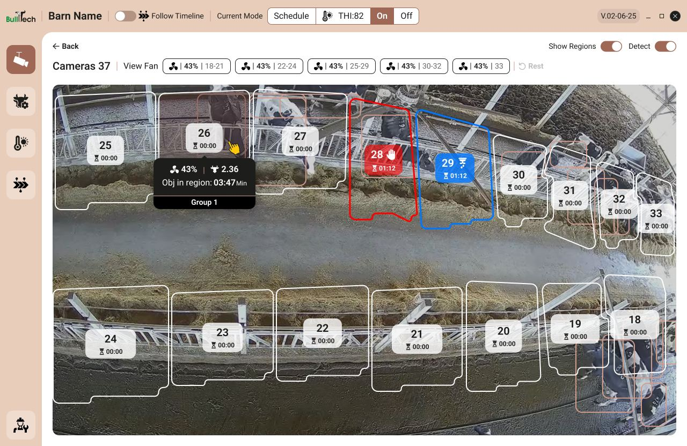
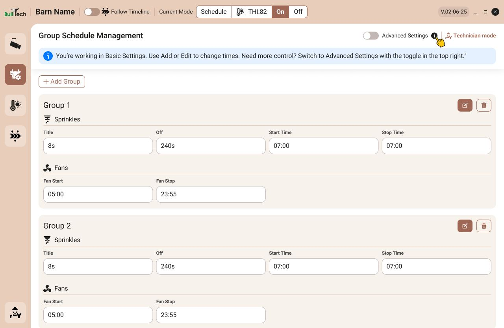

Cooling each cow, only while she eats
BullsEye cools dairy cows at the feed lane. Cameras and AI detect when a cow is at the manger, and a central control computer turns on her own sprinkler and the fans above her, only for as long as she needs it. Every fan and sprinkler can be controlled on its own, and the fans slow down when no cow is in the cooling area.
- Targeted coolingEach cow gets a dedicated sprinkler with an electric tap, so she stays cool while she eats, even between milkings.
- Less wasteSignificant savings in energy, water and manpower, with water and fans fully in sync.
- No tagsA fully independent system: the cameras see the cows, so nothing has to be fitted to them.
The control interface had been built by the developers, and the people who used it every day found it hard to work with. I worked on the specification and the redesign together with the product manager and the developers.
What wasn’t working
- Too many parameters. Every setting was on screen at once, and it was hard to tell what mattered.
- No clear navigation or flow. Users had no obvious path through the system.
- No context. The screens did not show the barn name, the camera name or the company logo, so users could not tell where they were.
- Colors that worked against the content. The palette had nothing to do with the brand, and on the camera screens it was so light that the parameters could not be read over the image.
Farmers want to know one thing: is every camera working?
I suggested field tests, and the product manager ran them with farmers and technicians. What farmers needed most was simple: to get to every camera quickly and see that it is working. The detailed parameters mattered to technicians, and having them in everyone’s way made the system harder to use for both groups.
Less on screen, more in control
- Every camera at a glance. The home screen shows the state of each cooling group, and under it a live tile for every camera. A camera that is down turns dark with a warning, so it cannot be missed. Selecting a tile opens its live view, refreshed every 30 seconds.
- Always know where you are. A fixed header on every screen shows the barn name, the current mode (Schedule, THI, On or Off) and the current heat stress index, with temperature and humidity on hover.
- The image comes first. On the camera screen, each feeding spot is a region drawn on the live image, with its own state and timer. Selecting a fan highlights the spots it covers.
- Basic first, advanced on demand. Everyday scheduling lives in basic settings. Advanced parameters sit behind a toggle with a short help line, and technician mode is separate and password protected, so farmers cannot change it by mistake.
- Cooling that follows the heat. THI limits for each group set how cooling steps up as heat stress rises, and adding one takes a single short form.
- A visual language built on the brand. BullTech’s colors and logo, with contrast that stays readable over a live camera image.
From a developer’s control panel to a farmer’s tool





What changed
Farmers and technicians gave positive feedback on the new interface. Farmers got a quick, clear way to check each camera, and technicians kept full control of the parameters without farmers changing them by mistake.